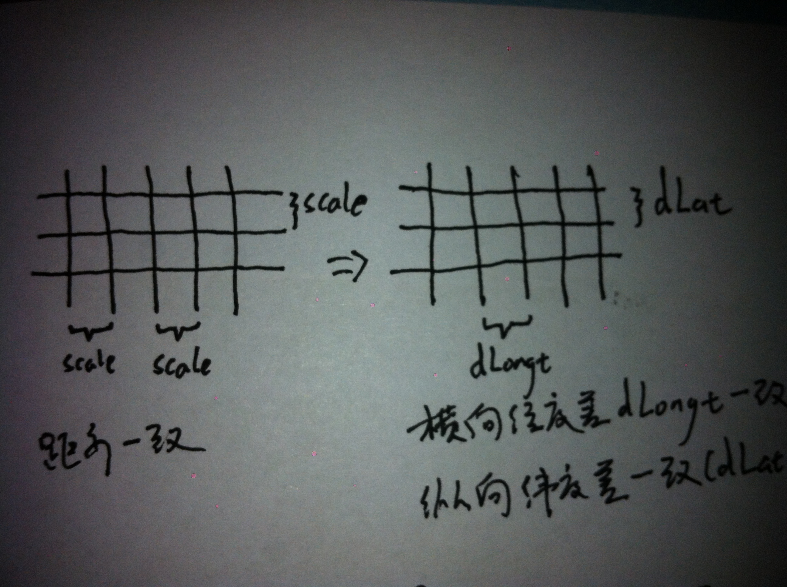
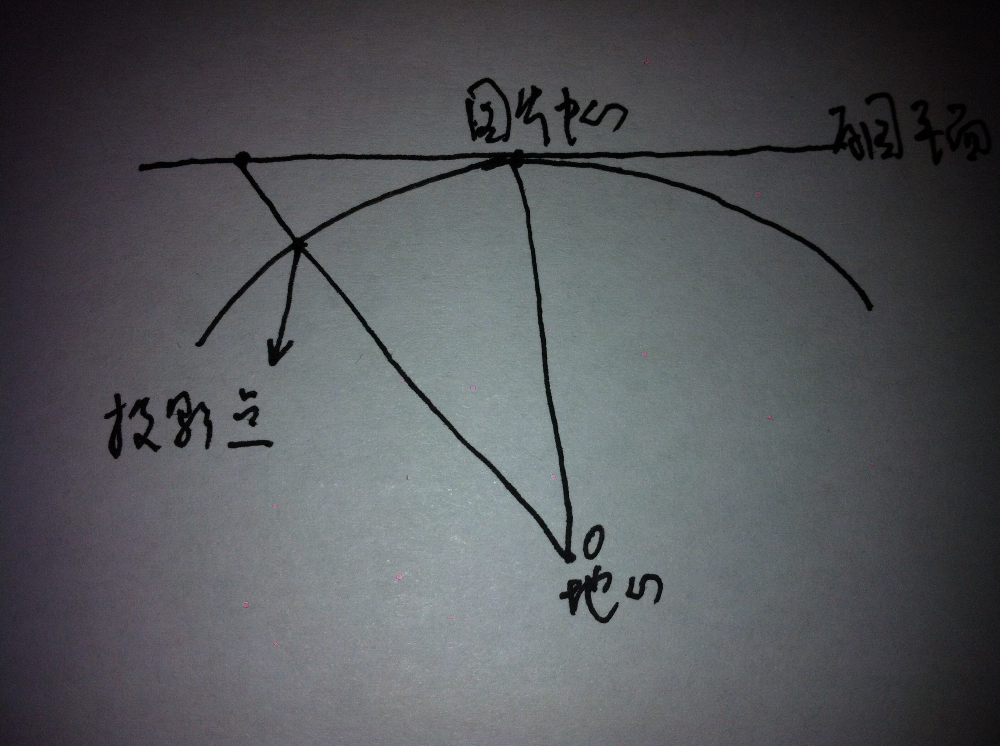

雷达原图是每个相邻像素间距离相差一致的图,我们要将其转换为每个相邻像素之间横向经度差一致,纵向纬度差一致的新图。如图所示:
原图是在中心点与地球球面相切的平面上,原图的点在地球球面上的投影点用它与地心连线和地球球面的交点来表示。如图所示:

原图:需要知道其站点中心像素坐标(Pixel::center),图像大小(dim,dim),扫描范围(range),每个相邻像素间距离(scale)。
新图:为了保存细节和便于后续处理,单位横向经度差设为中心点所在纬度圈上经过scale距离的经度差,单位纵向纬度差设为沿经线scale距离的纬度差(在所有的地方沿经线1km的距离纬度差都是一样的)。
因为这种图片的处理变形不是很大,所以新图的大小可以采用和原图一样,即(dim,dim),就足以接受原图全部的投影。中心点即是原图中心点的投影,像素坐标保持不变。
确定完新图的规格,就可以扫描新图的每一个像素点,然后去原图找到对应的像素点,赋值,即可得到新图。参照RadarUtils.transformToLalGrid方法。对于每个像素点的处理如下:
获取新图上该像素点的经纬度(LatAndLongt::point)。
由该像素点的经纬度(LatAndLongt::point),和中心点的经纬度,以及原图的规格,可以计算出该像素点在原图中对应的像素点的相对与中心点的像素偏移量(Pixel::newPixel)。参照GeoUtils.getPixelLocationRelativeTo方法。
得到对应的原图像素点,赋值给新图像素点。
这里我对原图中超过range范围的点,即没有数据的点,进行区分,赋值为-1。这样在存储的数据中(经过地理转换的数据,mongodb对应的radardata_gp数据库)就可以分清没有数据和值为0两种情况。不过在拼图处理中,我把这两种情况都以透明像素对待,如果需要区分,请修改拼图工程中的RadarUtils.unsimplefy方法。